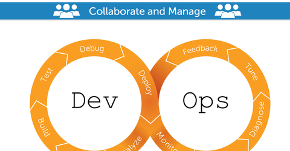

DevOps
Desenvolvimento e Operações.
Um pouco sobre DevOps!
O termo DevOps deriva da junção das palavras "desenvolvimento" e "operações", sendo uma prática de engenharia de software que possui o intuito de unificar o desenvolvimento de software e a operação do mesmo.